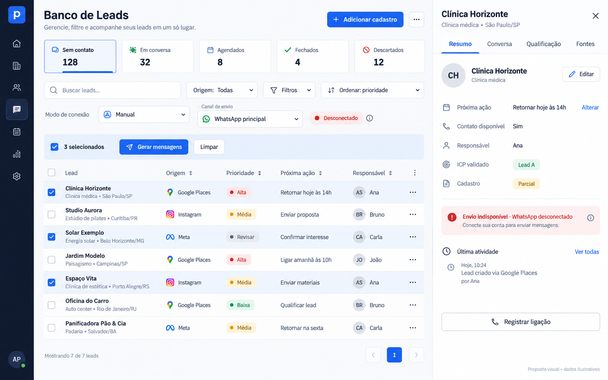
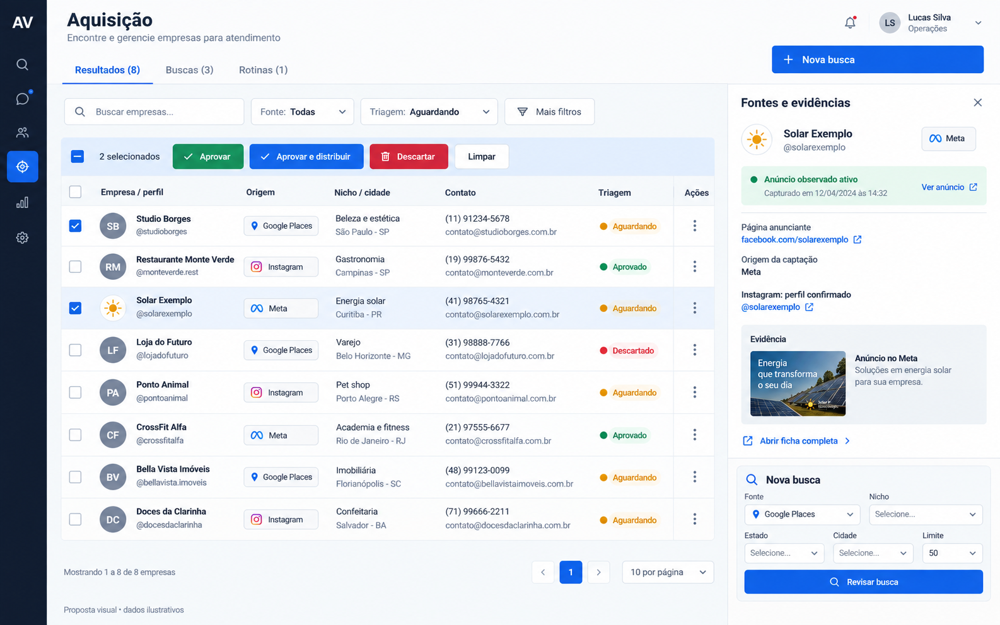
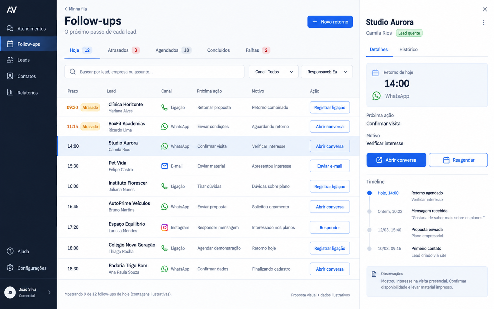
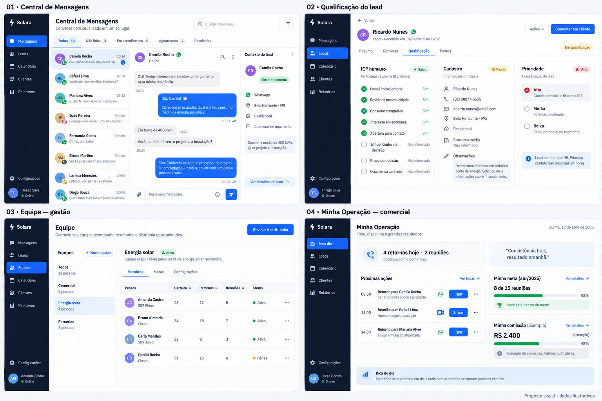

Lista unificada por finalidade, origem em cada lead, ficha por seções e planejamento diário dentro do Banco de Leads.
O menu lateral atual permanece exatamente como está. Os desenhos de Sidebar nas imagens de IA devem ser ignorados. A proposta é somente para a área onde se trabalha.
Quadro do dia
No Banco de Leads: Lista | Quadro do dia. Planejar meu dia seleciona leads da própria carteira. As colunas são Para hoje → Em trabalho → Aguardando retorno → Feito hoje. Aguardando exige próximo retorno; Feito hoje exige atividade registrada e não representa venda fechada.
Direções visuais
Rascunhos gerados por IA, com dados fictícios. Correções automáticas foram bloqueadas pelo limite de geração. As observações abaixo e o documento de análise prevalecem sobre os detalhes desenhados.

Banco de Leads. Aproveitar a lista e a ficha. Compactar os estágios; corrigir o rótulo para Modo de envio. Manter a Sidebar real e coerência entre filtro, linhas e fontes.

Aquisição. Resultados, buscas e rotinas dentro da mesma área. Corrigir filtro Aguardando versus linhas de outros estados. Nova busca abre formulário próprio, fora da ficha.

Follow-ups. Aproveitar a fila compacta. Ignorar menus administrativos e canal Instagram desenhados: não correspondem ao Comercial e aos canais autorizados.

Demais telas — composição apenas. Marca, checklist solar e prioridade editável foram inventados pela geração: não aplicar. Preservar ICP B2B, prioridade resolvida pela API e menu existente.